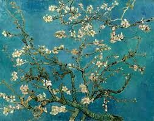

Vincent Willem van Gogh foi um famoso pintor pós-impressionista holandês nascido em 30 de março de 1853 em Groot-Zundert, nos Países Baixos. Ele é amplamente reconhecido como um dos artistas mais influentes da história da arte.
Van Gogh começou sua carreira como aprendiz de um negociante de arte e depois trabalhou como missionário na Bélgica. No entanto, sua verdadeira paixão sempre foi a pintura. Ele produziu mais de 2.000 obras de arte ao longo de sua vida, incluindo algumas das pinturas mais famosas do mundo, como "Noite Estrelada" e "Os Girassóis".
O estilo de Van Gogh era marcado por pinceladas ousadas, cores vibrantes e uma intensidade emocional única. Sua obra frequentemente explorava temas como a natureza, retratos e cenas da vida cotidiana, capturando a beleza e a tragédia da existência humana.
Vincent van Gogh faleceu em 29 de julho de 1890, aos 37 anos, após uma vida marcada por desafios emocionais e dificuldades financeiras. No entanto, sua obra perdura como um testemunho duradouro de sua genialidade artística. Ele influenciou inúmeras gerações de artistas e continua sendo uma figura icônica na história da arte.

A história de Vincent van Gogh é uma jornada de talento, paixão e luta. Sua contribuição para a arte é inestimável, e suas obras continuam a encantar e inspirar pessoas em todo o mundo.